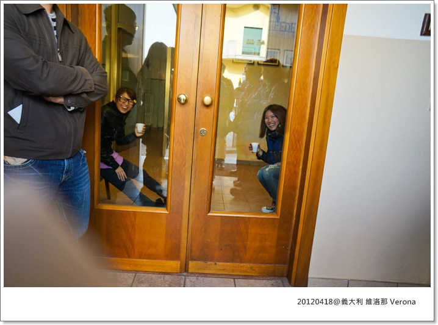

保全保全 有小偷！有小偷！！
出發前有想過幾種可能被偷的方式: 扒手、騙子....之類，萬萬也沒想到會有整台車被劫的這狀況
真的是人算不如天算！出國旅行這麼多次，好像每次都有永生難忘的爆點出現
我是該哭還是該笑? XD 這根本是被下詛咒吧(?)
走吧!! 一起去義大利警局參觀
第四天行程結束，我們坐巴士準備回飯店Chenk in，前往飯店的途中會經過一個大型賣場
因為順路，華友一般行程都會帶到這兒讓大夥各自採買接下來幾天的水或零食
但為了這袋該死的水跟零食，我們損失慘重！！！
從賣場出來還開心拍照，結果，下一秒就樂極生悲了 哈哈哈
去賣場採買時老丹給的時間很短，大概也只有20分鐘左右
大家都覺得反正只是買個水很快就回來加上我們都"誤以為"司機大哥會待車上等的情況下
於是乎，我們整車的人就這麼鬆懈了，很多人就把包包跟戰利品留在車上不帶
啊我家這隻阿空ㄟ當然也是這麼想.....Orz
下車前看他把相機500D放在座位上
我還問: ㄟ....相機你不帶下去嗎?
猛: 不用吧!!只有一下下而已，而且去超市也沒什麼好拍的
我聽完本來也把身上的小DC跟包包留著，但離開座前又覺得不妥，所以我又帶身上
(吼咧嗄在沒聽你的 )
)
結果大黟買完，人手一袋開心走到車子旁邊，發現老丹跟司機在車上，但車門卻關著
沒多久，老丹下車突然面色凝重跟我們說：我們車子被入侵........
馬上衝上車查看，衝到座位後發現 空的!!空的!!空的!! 放在椅子上的相機被幹走了!!!!FUCK
再衝到後兩個座位看我們買的名牌包，幹！袋子被打開了
車上瞬間一片哀嚎........
是的！就在我們去採買的時間，被不肖人士盯上，撬開我們的車門上車狂掃貨
啊司機人呢??????不是說好要顧車的嗎?????
結果這位老兄不知道為何也跑去買水 (買個屁啊你,怒!!!)
更慘的是這天剛好是在艾曼妞二世大道的血拼行程，很多人都是大包小包的精品-->前文艾曼妞二世shopping
從車上損失慘狀研判，小偷從前門上車一路往後方搜刮，但時間不夠只掃到中段，座位在後邊點的人就沒事
老丹坐第一個，他的登機箱整個被提走，裡頭有所有人的資料還有他的相機,衣服,參觀門票之類的東西
(所以後來他去威尼斯很可憐，沒衣服換穿XD)
還有一對夫妻他們GUCCI紙袋全被撕爛(看看有多急)，裡面的東西當然都沒了.........
這兩組大概是整車損失算慘重的，其他一堆人大部分都掉了包包、錢、最重要的護照
至於我跟猛哥嘛！應該算是不幸中的大幸，上天還是有一咪咪的眷顧我(?)
不幸的是，500D確定是被擄走了，而且那顆鏡頭還是新買的說，為了拍RAW檔記憶卡也是新的
這些都算了，重點是照片，我們倆好氣丟了米蘭跟加達湖的照片，這天猛大師可是得意洋洋拍出不少佳作
但好在我們有帶電腦每天都會把照片存到硬諜裡，所以只掉了第4天的照片
同行住台南的勇哥就比較可憐，前四天的照片全沒了不說，他那台單眼還是特地跟朋友借來的.......好慘！
但幸運的是，我們在艾曼妞二世買的PRADA、GUCCI、TOD'S (都代買居多,真的!)
這些貴鬆鬆的蛤子們都還在啊啊啊啊啊啊～～謝天謝地！！
之前有說過我們華友的業務小綠幫了我們大忙，就是這個，因為她的貼心叮嚀我們躲過了大災難
聽她的建議，出國前我們準備了幾個黑色不起眼的購物袋
一上車我就把部分名牌包分裝到這些黑色袋子裡，原本的精品紙袋就收好放一邊
在米蘭又剛好買了Carpisa登機箱，另一部分就塞進箱子裡鎖好
而我的黑色袋子拉鏈的確實有被打開，但可能時間緊迫，王八蛋小偷只能隨便翻翻，看不出是名牌(?)就放棄了沒拿
好在登機箱也沒被整個幹走，謝謝老天保佑 ！
老丹帶過那麼多次團第一次遇到這種事，華友其他團也從沒發生過整車被劫這檔事
我好幸運啊！才去一次就搶到頭香 
如果早知道沒有人在車上顧，我們一定會把東西全部扛下車，或者留一個在車上等
所以司機莫名其妙的離開車子，也很讓我們懷疑
所有聽過這段故事的,都說是他內神通外鬼??? 哈~誰知呢?又沒有證據
(媽的！他現在一定在某個島渡假--->硬扣上罪名給他 XD)
大家一路上都這麼小心翼翼，一失足成千骨恨
真的奉勸要去歐洲旅行的朋友真的千萬一刻不能鬆懈，掉了會心痛的東西請24小時保護它們吧！
如果旅行團都會安排這行程，我想小偷可能也觀望了一陣子了吧！不知道華友把這行程砍了沒? XD
所以隔天我們就多了一個景點(?)去Italy警局報案啦!
================= 義大利 報案SOP ================================
這是被搶的那天的晚餐時間，大家根本沒食慾，吃什麼都不知道
每個人都專心在滑滑滑跟台灣民眾(?)報告第一手消息 XD
當下我是沒有發FB，大家看到一定會巴拉巴拉狂回應，不想聽到"不意外"之類的這種話影響我心情 XD
啊～心酸誰人知啊～
猛哥很賤，他最近才跟我說 許歌琳=不意外 (媽的逼!!!!!我要休夫)
晚餐結束，所有苦主們各自自力救濟
人手一張A4把自己損失的東西&價值明細寫出來
這畫面太珍貴了，有種共患難的精神
這天住的飯店房間

床頭櫃上有個照片，每間房間不一樣，我們這間是個辣妹呦！
但她出現在那真的超級詭異的，一直感覺有人盯著你，最後，我們還是拿枕頭把她擋起來... 
經過一整天的折騰，洗完澡出來在床上抬腿5秒不到就睡著了我
是說我好像也不是只有這天這樣啦！哈哈哈哈哈
蜜月期間，讓老公洗香香出來，結果常常看到睡成L型的老婆，整個熄火(?)
好！我承認我是過份了點 ，老公！度不起 (跪) XDDDDDDD
室外好乾淨的草地，看到草地就想卡卡
豐盛的早餐，這天要吃飽一點，因為待會去警局不知會耗在那多久
畢竟義大利人做事是出了名的慢啊！！！！
很適合當天心情的晨光
苦主三人拿出白單控訴
咦? 這表情好眼熟!! 啊～去日本爆胎也有出現！！(自娛娛人? 我這是何必XDDDD)
這位洋蔥頭先生，你演的好爛！
P掉後面的勇哥，你看起來比較像便秘吶。XDDDDDDDD
芭比哭哭
發光的那位就是我們的司機大哥
雖然你一臉老實，但......快把我老公的裸照還來！！！！(還是在懷疑他 XD)
到了！今天的重點行程，鄉下地方小警局
看我也沒用，不是我害的........
小警長突然看到這麼多人擊鼓伸冤，應該很想立刻關門不想接案吧！？
哈哈哈～這搞不好超過他一整年的工作量? (開玩笑的)
哀怨人妻組，想不到我們第一次見面，就可以遇上這等頭條大事
我們的婚姻絕對經得起考驗(?) 拍拍
好淒涼...........
義大利人動作果然不意外的溫吞，堅持一次只放一個人進去作筆錄，我們其他人只能抖翻天在外面等
結果有個警察跟我比了個冷的姿勢打算要把門關上，我也回敬了一個更冷的姿勢，於是他就放我進去坐沙發
進去後他又問了另一個警察要不要喝咖啡
我直接自己回答:OK --> 好個得寸進尺的傢伙,明明就不是問我XD
於是他又邀請(?)我進去喝咖啡，我拉了芭比一起，走出來我們一人一杯咖啡，站在外面的大家都傻眼了！
我說警察局裡的咖啡也好好喝哦！！是販賣機型式，只要插入鑰匙就可以點咖啡，可選擇的種類還不少咧

卡卡 警局到此一遊紀念照！
我們7:00從飯店出發，7:30到警局，10:00所有人的筆錄才完成
好在我們前一天有先列出明細，不然我想應該會到下午去了.....
至於到底能不能抓到小偷? 大家心裡有數.....
報案只是為了回台灣可以申請理賠啊！
=====================================================
報完案回飯店一切暫時告一段落，行程才走到第四天，還有八天呢？
調整一下心情我們又要開始high啦！
物以類聚(?) 心情轉換的速度還真快呀我們 XD
總是有奇奇怪怪的事發生在我身上，但只要能順利解決，回頭看也是個特別的回憶！
我很享受著旅程中各種發生的可能
這兩個也是樂天派的
出發！！ (喂!!!司機,車丟著你又跑去那了!!!!! )
)
再見了，維洛那小鎮
所有美好的不愉快的 都在這一刻拋在腦後
 歐洲冒險 MK義大利蜜月系列
歐洲冒險 MK義大利蜜月系列